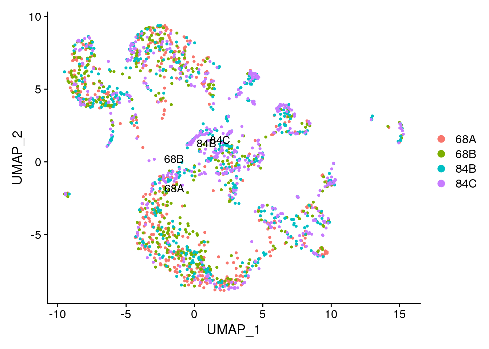
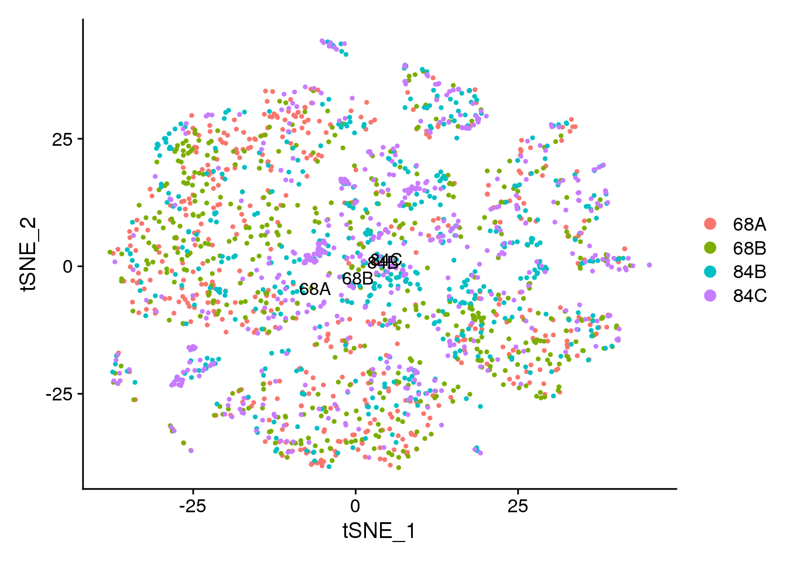
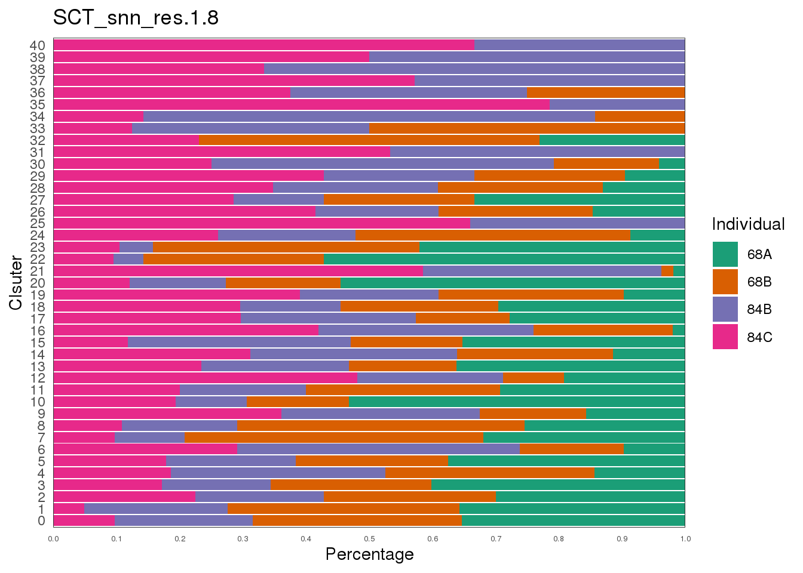

Chapter 6 Seurat Individual Batch Effect Exploration
6.1 Descripiton
Explore the individual batch effect by
Dimplot split by individual
Fractions of individuals per cluster
6.2 Load seurat object
combined <- get(load('data/Demo_CombinedSeurat_SCT_Preprocess.RData'))6.3 Explore individual distribution by Dimplot
Idents(object = combined) <- 'Individual'
DimPlot(object = combined, reduction = "umap", label = T) 
DimPlot(object = combined, reduction = "tsne", label = T) 
6.4 Calculate individual distribution per cluster with different resolution
df <- data.table(combined@meta.data)
sel.meta <- c("Individual", str_c('SCT_snn_res.', c(1, 1.5, 1.8)))
df <- df[, sel.meta, with = FALSE]
df[, 2:4] %>% imap(~ {
freq1 <- df[, .N, keyby = .(.x, Individual)]
freq1[, total := sum(N), by = .(.x)]
freq1[, ratio := N / total]
linesize = .35
fontsize = 8
ggplot(freq1, aes(fill = Individual, y = ratio, x = .x)) +
geom_bar(position = "stack", stat = "identity") +
scale_fill_brewer(palette = "Dark2") +
xlab('Clsuter') +
ggtitle(.y) +
scale_y_continuous(breaks = seq(0, 1, 0.1),
expand = c(0, 0),
name = 'Percentage') +
theme_bw() +
theme(
panel.grid.major.x = element_blank(),
panel.grid.major.y = element_blank(),
panel.grid.minor = element_blank(),
strip.background = element_blank(),
panel.border = element_rect(size = linesize),
axis.ticks = element_blank(),
axis.text.x = element_text(size = 5)
) +
coord_flip()
})## $SCT_snn_res.1
##
## $SCT_snn_res.1.5
##
## $SCT_snn_res.1.8